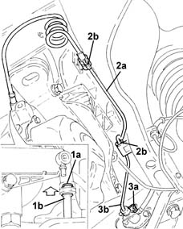
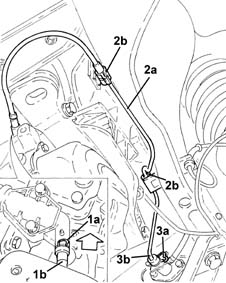

1820B49 Supply PIPE from (pump) - master cylinder R.R.
- Path
- Procedures > 18 CLUTCH > 1820 CLUTCH RELEASE CONTROLS > 1820B HYDRAULIC CLUTCH SYSTEM > 1820B49 Supply PIPE from (pump) - master cylinder R.R.
- Kind
- repair procedure (removal / refitting; the operation number is the code)
- Applies to
- engines: 1.2 8v, 1.2 16v, 1.4 16v; all production periods
- Interactive page
- https://sloeber94.github.io/elrnDB-lYpsln/en/#/2429104
Applies to: engines: 1.2 8v; all production periods
 Removing
Removing
 Refitting
RefittingPosition the vehicle on the ramp.
Proceed with removal 4450B02 left front wheel r r .
Proceed with removal 7055B90 Left front WHEEL ARCH LINER - R.R. .
Remove the cap on the bleed valve.
Connect the collection system (pipe and reservoir) to the bleed valve on the master cylinder.
Loosen the bleed screw and let the hydraulic clutch system drain completely.
1. Lift the retaining clip (1a) and disconnect the pipe from the master cylinder (1b), operating cylinder side.
2. Release the supply pipe from the master cylinder (2a) from the bands (2b) on the flexible mounting for the gearbox side rigid power unit support.
3. Lift up the retaining clip (3a) and disconnect the pipe from the master cylinder (3b), master cylinder side and remove it.

Applies to: engines: 1.2 16v, 1.4 16v; all production periods
Removing
RefittingPosition the vehicle on the ramp.
Proceed with removal 4450B02 left front wheel r r .
Proceed with removal 7055B90 Left front WHEEL ARCH LINER - R.R. .
Remove the cap on the bleed valve.
Connect the collection system (pipe and reservoir) to the bleed valve on the master cylinder.
Lift the retaining clip until the first click is heard and remove the pipe sufficiently to uncover the bleed hole.
Let the hydraulic clutch system drain completely.
1. Lift the retaining clip (1a) completely and disconnect the pipe from the master cylinder (1b), operating cylinder side.
2. Release the supply pipe from the master cylinder (2a) from the bands (2b) on the flexible mounting for the gearbox side rigid power unit support.
3. Lift up the retaining clip (3a) and disconnect the pipe from the master cylinder (3b), master cylinder side and remove it.

Applies to: engines: 1.2 8v; all production periods
Refitting
RemovingPlace the pipe from the master cylinder back in its housing, fit it fully in its housing in the master cylinder and secure it using the retaining clip.
Fasten the supply pipe from the master cylinder to the flexible mounting for the gearbox side rigid power unit support using the bands.
Fully fit the pipe from the master cylinder in its housing on the clutch operating cylinder and secure it using the retaining band.
Proceed with refitting 0010T64 brake and or clutch fluid check level and top up as necessary .
Proceed with refitting 0010T67 hydraulic clutch system bleed air .
Proceed with refitting 7055B90 Left front WHEEL ARCH LINER - R.R. .
Proceed with refitting 4450B02 left front wheel r r .
Remove the car from the ramps.
Applies to: engines: 1.2 16v, 1.4 16v; all production periods
Refitting
RemovingPlace the pipe from the master cylinder back in its housing, introduce it fully into the housing on the master cylinder and secur it using the retaining clip.
Fasten the supply pipe from the master cylinder to the flexible mounting for the gearbox side rigid power unit support using the bands.
Fit the pipe from the master cylinder fully home in its seat on the clutch operating cylinder and secure with the retaining clip.
Proceed with refitting 0010T64 brake and or clutch fluid check level and top up as necessary .
Proceed with refitting 0010T67 hydraulic clutch system bleed air .
Proceed with refitting 7055B90 Left front WHEEL ARCH LINER - R.R. .
Proceed with refitting 4450B02 left front wheel r r .
Remove the car from the ramps.